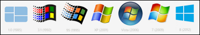

<html>
 <head>
  <title></title>
 </head>
 <body>
 </body>
</html>
<title>dosyalar</title>
<body>
 <div id="sonuc">
  <iframe frameborder="0" height="30" scrolling="no" src="http://guvenlinet.org.tr/profil_test.php" width="800"></iframe></div>
 <p>
  &nbsp;&nbsp;&nbsp;&nbsp;&nbsp;<a href="Ercoskun Bilgisayar Destek.exe"></a></p>
 <div id="ip" style="position: absolute; width: 40px; height: 27px; z-index: 1; left: 50px; top: 50px">
  <a href="http://www.proxyswitcher.com/check.php"> </a></div>
 <div id="speedtest" style="position: absolute; width: 40px; height: 27px; z-index: 1; left: 135px; top: 41px">
  <a href="http://speedtest.smileadsl.com/index.html"> </a></div>
 <p>
  <font size="2">&nbsp;<a href="http://www.alpemix.com/site/Alpemix.exe">Alpemix</a><br />
  &nbsp;<a href="http://www.ammyy.com/AA_v3.exe">Ammyy</a><br />
  &nbsp;<a href="http://www.teamviewer.com/download/TeamViewer_Setup_tr.exe">TeamViewer</a> &gt; ONLINEYARDIM.TK &nbsp; &nbsp; &nbsp; &nbsp; &nbsp; &nbsp; &nbsp; <a href="http://login.teamviewer.com/Connect" target="_blank">IE Web Connect</a><br />
  &nbsp;<a href="http://download.bleepingcomputer.com/sUBs/ComboFix.exe">ComboFix</a><br />
  &nbsp;<a href="http://www.gezginler.net/modules/mydownloads/visit.php?lid=756">HijackThis</a><br />
  &nbsp;<a href="http://files.avast.com/iavs9x/avast_free_antivirus_setup.exe">Avast</a>&nbsp;&nbsp;&nbsp;&nbsp;&nbsp;C32728113H1200A0814-HAJ3DLNV<br />
  &nbsp;Microsoft Security Essentials&nbsp;&nbsp;<a href="http://mse.dlservice.microsoft.com/download/B/D/5/BD5BF018-34A0-4FEA-A596-9090543C8B1A/trTR/x86/mseinstall.exe">Xp</a>&nbsp;&nbsp;Vista\7 &nbsp;&nbsp;<a href="http://mse.dlservice.microsoft.com/download/B/D/5/BD5BF018-34A0-4FEA-A596-9090543C8B1A/trTR/x86/mseinstall.exe">32 bit</a>&nbsp;&nbsp;&nbsp; <a href="http://mse.dlservice.microsoft.com/download/B/D/5/BD5BF018-34A0-4FEA-A596-9090543C8B1A/trTR/amd64/mseinstall.exe">64 bit</a><br />
  &nbsp;<a href="http://www.kaspersky.com/antivirus-removal-tool?form=1">Kaspersky Virus Removal Tool</a><br />
  &nbsp;Java&nbsp;&nbsp;<a href="http://www.gezginler.net/modules/mydownloads/visit.php?lid=378">32 bit</a>&nbsp;&nbsp;&nbsp;&nbsp;&nbsp;<a href="http://www.gezginler.net/indir/v/378/x64/">64 bit</a><br />
  &nbsp;<a href="http://get.adobe.com/tr/flashplayer/otherversions/">Flash Player</a><br />
  &nbsp;<a href="http://get.adobe.com/reader/otherversions/">Adobe Reader</a><br />
  &nbsp;WinRAR&nbsp;&nbsp;<a href="http://www.rarlab.com/rar/wrar501tr.exe">32 bit</a>&nbsp;&nbsp;&nbsp;&nbsp;&nbsp;<a href="http://www.rarlab.com/rar/winrar-x64-501tr.exe">64 bit</a><br />
  &nbsp;<a href="http://www.skype.com/go/getskype-full">Skype</a><br />
  &nbsp;<a href="http://download.nullsoft.com/winamp/client/winamp563_lite_tr-tr.exe">Winamp</a><br />
  &nbsp;<a href="http://files.3dnews.org/pub/soft/multimedia/codec/K-Lite_Codec_Pack_1030_Basic.exe">K-Lite Codec Basic</a><br />
  &nbsp;<a href="http://download.glarysoft.com/gupsetup.exe">Glary Utilities Pro</a>&nbsp;&nbsp;&nbsp;&nbsp;&nbsp;2788-61679-58768 </font><font size="1"> <a href="http://dl.oduncu.com/u/98737737/dosyalar.tk/files/Glary%20Utilities.zip">zip</a></font><font size="2"><br />
  &nbsp;<a href="http://dl.oduncu.com/u/98737737/dosyalar.tk/files/BlueScreenView.exe">BlueScreenView</a><br />
  &nbsp;<a href="http://dl.oduncu.com/u/98737737/dosyalar.tk/files/WirelessKeyView.exe">WirelessKeyView</a><br />
  &nbsp;<a href="http://dl.oduncu.com/u/98737737/dosyalar.tk/files/MyUninstaller.exe">MyUninstaller</a><br />
  <br />
  &nbsp;<a href="https://dl.google.com/tag/s/appguid%3D%7B9B13FA92-1F73-4761-AB78-2C6ADAC3660D%7D%26iid%3D%7B7FD21193-2646-9633-8728-57729A37A79F%7D%26lang%3Dtr%26browser%3D4%26usagestats%3D0%26appname%3DGoogle%2520Cloud%2520Printer%26needsadmin%3Dtrue/cloudprint/virtualprintersetup.exe">Google Cloud Printer</a><br />
  <br />
  &nbsp;<a href="http://www.google.com/chrome/eula.html?system=true&amp;standalone=1">Google Chrome</a><br />
  &nbsp;<a href="http://www.gezginler.net/modules/mydownloads/visit.php?lid=2949">Mozilla FireFox</a><br />
  &nbsp;Nero&nbsp;&nbsp;&nbsp;<a href="http://dl.oduncu.com/u/98737737/dosyalar.tk/files/Nero 8 All.exe">8</a>&nbsp;&nbsp;<a href="files/Nero 10 All.exe">10</a><br />
  &nbsp;<a href="http://dl.oduncu.com/u/98737737/dosyalar.tk/files/DeepFreeze.exe">DeepFreeze</a>&nbsp;&nbsp;&nbsp;&nbsp;&nbsp;NKQ7KD4E-MTRZ4606-6NTTCAFX-Z4APSWN4-ZS65BM43<br />
  <br />
  <a href="http://ninite.com/"> > <br />
   Microsoft </a> &nbsp; <a href="https://www.dropbox.com/sh/wrxs58l2g3gvp06/AAAXGZx0zNcXtnPWg1aDFwdOa"> Files<br />
  <a href="http://download.microsoft.com/download/2/0/e/20e90413-712f-438c-988e-fdaa79a8ac3d/dotnetfx35.exe">.NET 3.5 Full</a>&nbsp;&nbsp;&nbsp;&nbsp;&nbsp;<a href="http://download.microsoft.com/download/9/5/A/95A9616B-7A37-4AF6-BC36-D6EA96C8DAAE/dotNetFx40_Full_x86_x64.exe">.NET 4 Full</a><br />
  <a href="http://dl.oduncu.com/u/98737737/dosyalar.tk/files/Office%202003.exe">Office 2003</a> &nbsp;&nbsp;&nbsp; <a href="http://download.microsoft.com/download/8/6/c/86c94b8e-294d-4d5d-867f-8e5c1409b964/FileFormatConverters.exe">Patch</a>&nbsp;&nbsp;&nbsp; <a href="https://docs.google.com/folder/d/0BxyeLZMhoIysRVpHdlh6ZlBoUlU/edit"> <font color="#FFFFFF">Other</font></a><br />
  <a href="http://download.microsoft.com/download/8/3/7/83712767-395c-4327-8e87-38be7b0cf75f/KeyUpdateTool_enu.exe"> Xp Key Change</a>&nbsp; &nbsp; <a href="LicenseCrawler.exe">Key Licence Check</a><br />
  <a href="http://download.microsoft.com/download/1/4/7/147ded26-931c-4daf-9095-ec7baf996f46/WindowsInstaller-KB893803-v2-x86.exe">Windows Installer 3.1</a><br />
  <a href="http://download.microsoft.com/download/C/B/7/CB7C2809-EB9C-4640-90CE-8E98E641BA64/IE8-WindowsXP-x86-TRK.exe">Xp IE 8</a>&nbsp;&nbsp;<a href="http://download.microsoft.com/download/2/8/1/28138706-ff00-4957-b7bb-7fe44d6c1b5e/WindowsXP-KB932823-v3-x86-TRK.exe">Xp IE 8 Patch</a><br />
  <a href="http://xpsp.dlservice.microsoft.com/download/4/7/9/4797a8f7-bf89-45ae-ad3d-900d0714096e/WindowsXP-KB936929-SP3-x86-TRK.exe">Xp SP3 Patch</a><br />
  <a href="http://download.microsoft.com/download/C/1/B/C1B4CB34-8F97-48DE-9114-37A5117F85AB/WindowsXP-KB955704-x86-TRK.exe">Xp exFAT Patch</a><br />
  Xp to 7 Aktarma &nbsp;<a href="http://download.microsoft.com/download/E/2/8/E284AED2-AD15-4A50-A1FB-7D8CBCFC954D/wet7xp_x86.exe">32 bit</a>&nbsp;<a href="http://download.microsoft.com/download/3/4/5/3455539C-895B-4207-9165-8207E9BC68C7/wet7xp_x64.exe">64 bit</a><br />
  Vista to 7 Aktarma &nbsp;<a href="http://download.microsoft.com/download/F/3/B/F3B15BD8-4FA3-4325-A9A1-5CBDAD835231/Windows6.0-KB928635-x86.msu">32 bit</a>&nbsp;<a href="http://download.microsoft.com/download/D/8/D/D8DF836A-3031-4F58-977A-F569B54749AC/Windows6.0-KB928635-x64.msu">64 bit<br />
  <br />
  </a> </font><span style="font-size: small;"> </span><a href="http://download1188.mediafire.com/0m3fpo3mopkg/l0k9w1c9v7cbyiz/ClassicShellSetup_4_0_4.exe" style="font-size: small;">Classic Shell - Windows 8 Start Menu</a></p>
 <p>
  <font size="2"><a href="http://live.sysinternals.com/autoruns.exe"> Autoruns for Windows v11.33</a><br />
  <a href="http://live.sysinternals.com/procexp.exe"> Process Explorer v15.22</a> </font></p>
 <br />
<script id="_waup28">var _wau = _wau || []; _wau.push(["small", "5qfatxzehnfe", "p28"]);


(function() {var s=document.createElement("script"); s.async=true;


s.src="http://widgets.amung.us/small.js";


document.getElementsByTagName("head")[0].appendChild(s);


})();</script> <p>
  &nbsp;<a href="http://download.drp.su/DriverPack-Online.exe"> <font size="2">DriverPack Online</font></a><font size="2"><br />
  <a href="http://nexusyedi.dyndns.org:8080"> <font size="2">Nexus 7 Tools</font></a><font size="2"><br />
  <a href="ftp://213.194.123.227/"> <font size="2">Casper Driver</font></a><font size="2"><br />
  <a href="http://www.filesovermiles.com/"> Send File</a><br />
  </font> <a href="https://saucelabs.com/scouthome"><font size="2">Sauce Labs&nbsp; </font> </a> <font size="2"><br />
  <a href="http://www.adrive.com"> My Files</a><br />
  <a href="http://www.dreamsupport.us/downloads/windows-pc/"> Download</a><br />
  <a href="http://bf.i-port.su/ftp/files/"> Download 3D</a><br />
  <a href="http://sanclaudia.free.fr/Software/"> Download extra</a> &nbsp;<br />
  <a href="http://dl.eram.shirazu.ac.ir"> Download archive</a> &nbsp;<br />
    &nbsp;<a href="http://tr.lmon.org">Film Izle</a><br />
  </font></font></p>
 <hr />
 <p>
  <font size="2"><font size="2"><a href="https://www-secure.symantec.com/premium_services/helpware/2.0/fuhu_website_other/PCCheckupInstaller.exe">Norton Online Scanner</a></font><br />
  <font size="2"><a href="http://liveupdate.symantec.com/upgrade/NPE/1055/NPE.exe">Norton Power Eraser</a></font><br />
  <font size="1"><font size="2"><a href="http://spftrl.digitalriver.com/pub/symantec/2004/NAVPCWelt180.exe"> Norton Antivirus 2009 180 Day </a> </font><font size="2"><br />
  <a href="https://www.mynortonaccount.com/amsweb/default.do"> Norton Sign IN to Key</a><br />
  <a href="http://buy-download.norton.com/downloads/CLT/NAV/TK/2012/19.5/2012195/ESD/NAV-TW-30-19-5-0-145-TK.exe"> Norton Antivirus 2012 TR Install </a><br />
  <a href="http://spftrl2.digitalriver.com/pub/symantec/2004/NAV2009_16.0_Build_0000001_OEM90_Microsoft.exe"> Norton Antivirus 2009 90 Day </a><br />
  <a href="http://spftrl.digitalriver.com/pub/symantec/2004/PRNAV2009-90ML.exe"> Norton Antivirus 2009 90 Day </a><br />
  </font> <a href="https://tr.norton.com/ps/loem/EN/Facebook/index.html"> Norton Antivirus 2012 180 Day </a><br />
  </font> <a href="ftp://ftp.symantec.com/public/english_us_canada/removal_tools/Norton_Removal_Tool.exe"> <font size="2">Norton Removal Tool </font> </a></font></p>
 <p align="left">
  <font size="2"><font size="2"><a href="Boot.cmd">Win8 Boot</a> &gt; shutdown.exe /r /o /f /t 00<br />
  Hidden Files &gt; attrib /S /D -h -r -s</font><br />
  <sup><sub>-inurl:htm -inurl:html intitle:&quot;index of&quot; mp3 &quot;remix&quot; </sub></sup><font size="1"><a href="http://ridth.com/@public/utilities/Windows%207%20Loader%20v2.1.0/Keys.ini"><sup><sub> </sub></sup><span style="background-color: #FFFFFF"><font color="#FFFFFF"><sup><sub>ke</sub></sup>ys.ini</font></span></a></font></font></p>
 <font size="2"><a href="http://stats.betradar.com/ls/livescore/?/fortuna/tr/page"> <font size="1">Live Score </font> </a><br />
 <a href="http://ntvspor.broadagesports.com/"> <font size="1">NTV Istatistik </font> </a><br />
 <a href="http://stats.betradar.com/s4/?clientid=475&amp;language=tr#2_1,3_46,22_1,5_6863,9_summary"> <font size="1">Statistics </font> </a><br />
 </font></body>
